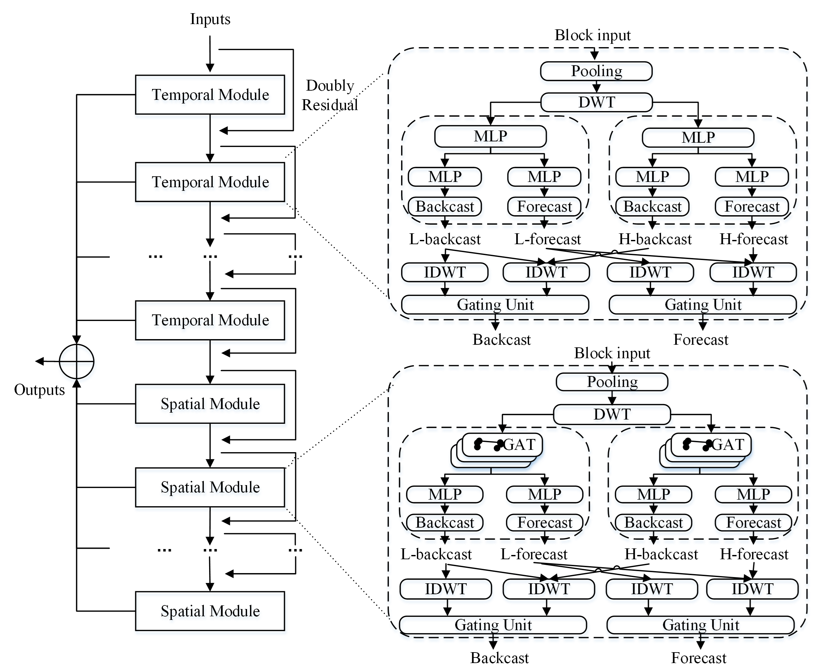

Xiaoffy
于晓飞
联想研究院
AI算法研究员
23届北航硕士
地址: 北京市海淀区联想全球总部
邮箱: xiaofei_66@buaa.edu.cn
文章
项目
GitHub
CSDN
CV
自我介绍
大家好，我是北京航空航天大学交通学院23届硕士毕业生，在校期研究方向为基于数据驱动的选址、建模优化等问题研究。
目前在联想研究院担任算法研究员，致力于解决
时序数据中预测，异常检测以及根因分析
等问题工业化场景痛点
同时，我还为多名在校生提供求职辅导咨询，目前已帮助百余名同学在求职方向，面试等方面取得成功。受到同学一致好评。
兴趣方向：
大模型商业化落地，AI Agent端到端的解决方案研究，异构计算等
最近动态
[1/2024] 开展AI基础算力平台研发工作，开始异构计算平台的研发工作，对AI软件栈进行适配。
[8/2023] 投身于大模型算法研究，基于RAG和AI Agent进行产品化落地，为产品赋能AI能力。
[6/2023] 对多个虚拟机之间的复杂关联性问题深入研究，并提出虚拟机结点关联性的方法，发明专利一项。
[5/2023] 基于图注意力方法对多维时序数据进行异常检测，投稿EI论文一篇，论文已发表。
[4/2023] 开始大模型问题研究，并针对ChatGPT原理及应用前景做学术分享一次.
[1/2023] 入职联想研究院，担任智能运维算法研究员.
[12/2022] 被评为
北航优秀实习生
，学院（Top 2）并获得特别项目奖励金.
[12/2022] 硕士毕业，论文被推为
北航优秀毕业论文
.
[7/2022] CICPT2022
Best Paper Award
.
[7/2022] 研究智能运维相关领域，对AIOps前沿领域的文献算法进行综述并完成学术报告。
[6/2022] 基于数据驱动的停车设施选址研究，投稿交通信息与安全期刊，目前已被接收。
[5/2022] 完成硕士研究生阶段毕业设计中期检查，线上汇报。
[5/2022] 一种基于数据驱动的停车设施选址方法，发明专利。
[4/2022] 银川市公交线网优化，项目负责人。
[3/2022] 一种考虑长短期路段性能的道路韧性衡量方法，发明专利，申请号：202111531404 .X。
[1/2022] 城市交通状态与安全态势协同关联分析平台，软件著作权，登记号：2022SR0188253。
[11/2021] 确定选题方向，完成研究生阶段开题答辩以及相关材料的提交。
[10/2021] 参加“华为杯”研究生数学建模竞赛(队长),机组排班问题
[8/2021] 开展负责基于数据驱动的停车设施选址问题的研究
[7/2021] 弹性研究论文被国际绿色智能交通系统与安全学术会议接收
[7/2021] 参与国家重点专项项目交通弹性课题申报工作，课题申报获批
[6/2021] 参加世界交通大会(WTC)学术会议
[5/2021] 开展交通弹性相关研究
[4/2021] 重庆市主城区公共交通动态判断与对策研究。
学生骨干，阿里巴巴高德地图项目合作实习生
[3/2021] 负责公交线网优化可视化平台搭建工作，技术栈
javascript,html,CSS
,框架
VUE
[1/2021] 交通大数据教材编写工作，负责编写数据库部分内容
[12/2020] 北京市交委tocc预测预警项目，冬奥场馆大客流预警
[9/2020] 牵头负责交通数据科学书籍的翻译校核工作
[9/2020] 研究生入学北京航空航天大学交通学院交通运输专业
[6/2020] 本科毕业并被评为大连市优秀毕业生
[1/2020] 考取中华人民共和国海员证和海员适任证书
[9/2019] 获得保研资格，推免至北京航空航天大学
[1/2019] 全国大学生创新创业训练计划， 加入自动监督机制的图书馆预约管理系统
[10/2018] 全国大学生数学竞赛
[10/2018] 全国大学生计算机二级证书（
MS office
）
[9/2018] 担任大连海事大学学术性社团德尔塔学社主席
[9/2018] 全国大学生数学建模竞赛
[4/2018] 全国大学生“创青春”创新创业大赛，In 三联 App
[12/2017] 全国大学生创新创业年会高校志愿服务
[12/2017] 全国大学生创新创业训练计划，手势交互技术及应用
[7/2017] 全国大学生暑期三下乡社会实践活动
[12/2016] 全国大学生创新创业训练计划，学生综合信息平台搭建
[10/2016] 担任班级学习委员，为班级同学提供学习上的帮助。
[9/2016] 本科入学大连海事大学
航海技术实验班
教育经历
交通运输 研究生
2020 - present
北京航空航天大学
导师:马晓磊
航海技术(实验) 本科
2016 - 2020
大连海事大学
实习
中国工商银行总行 风控算法工程师
金融风控反欺诈算法研究，对信用卡交易过程中欺诈行为进行识别，基于提升树 LR 决策树 等根据用户画像进行效果比对。
基于知识图谱对团伙欺诈行为进行检测，对Louvain LPA等 社区发现算法在打击黑产团队的应用进行探究。
在异常交易检测过程中，对样本极度不平衡下的数据进行采样和分析，提出对多维度特征下，欺诈行为的检测和分析方案。
联想研究院 智能运维算法研究员
追踪智能运维领域前沿研究，对关键性指标的异常检测、时序预测、根因分析等方向算法进行梳理，在组内做学术分享。
基于CPU 内存等历史数据和实时数据进行异常检测算法的研究， 探索无监督学习算法在异常检测方向的应用及可解释性。
基于AIOps 2022国际运维挑战赛 数据 ，从服务器节点角度出发进行故障识别与分类，指标之间关联关系的确定以及完成对多维 KPI 异常定位的工作，通过注入故障来验证算法的效果 ，探索 AutoEncoder和 VAE算法 在样本不均衡条件下的效果。
项目
重庆市主城区公共交通动态判断与对策研究（学生骨干，阿里巴巴高德地图项目合作实习生）
作为学生主力，与高德对接，梳理静态指标，出行体验指标和通勤指标三大部分指标计算文档与报告大纲
驻场高德地图和重庆城市交通投资开发集团，利用pyhton和QGIS，处理并可视化线路基础数据和海量通勤数据
从公共交通基础设施建设，居民出行和通勤分析三个方面，按照重庆中心城区，内环区和五个热点区三个层级展开分析
主导五个热点区通勤思路分析，挖掘通勤需求与公共交通供给间的关系，给出优化建议，部分建议已经落地实施
公交线网可视化平台及路网态势检测解析系统搭建
2021.03-2021.11
独立设计并搭建
公交可视化系统
界面，技术栈
javascript,html,CSS
，所用框架
Vue
。
取高德api可视化指定公交线路图并区分上下行的原始线路图，通过优化处理后的POI坐标点绘制优化后的路线，并对优化前后的线路和指标的对比来展示优化线路的效果。
设计并搭建
交通路网态势检测解析系统
，将北京市一年的道路事故进行可视化展示，并显示事故影响排名以及详细事故信息。
“华为杯”研究生数学建模竞赛（队长）
2021.10
所选研究问题是航空公司，机组排班问题对航空公司员工排班进行组合优化实现资源高效配置。通过线性加权方法构建多目标优化函数，构建混合整数规划模型精确描述问题，设计启发式算法求解。
取通过构建启发式算法框架创新性提出基于禁忌规则的“解编和组编”的优化思路，
论文
具有较高适应性和推广性。
风控算法竞赛：贷款违约预测
TOP 1%
2021.12-2022.01
根据信贷平台的贷款数据，47个特征变量以及15个匿名变量对借贷人违约的可能进行预测。
本项目的技术路线以及算法设计流程：
1、数据探索阶段理清各数据特征之间的关联性，对变量类型进行区分性考虑；
2、结合已有金融知识的了解进行特征工程的构建 ，探索性的构建衍生特征 ，并对连续性特征进行 分箱处理。对缺失值，异常值 进行处理，根据PSI指标进行特征提取；
3、构建 XGBoost, LGBM, GBDT 等模型，通过 网格调参 获得最佳参数值，通过AUC等指标进行结果的评估。 探索性尝试 CatBoost 建模并取得较好效果，采用采样的方法对不平衡样本进行探索性处理。
基于数据驱动的停车设施选址项目
2021.5-present
独立承担并负责项目涉及到的所有需求。
提出加权K-means聚类研究设施选址问题。
运用鲁棒优化对问题进行建模求解分析。
文章
Evaluating and Predicting road network resilience using traffic speed and log data
(Best Paper Award)
Xiaofei Yu
, Erlong Tan, Xiaolei Ma, Zhao Zhang
In Proceedings of the 22nd COTA International Conference of Transportation Professionals (Intelligent, Green and Connected Transportation)
基于数据驱动的停车设施选址研究
于晓飞
, 马晓磊*，刘兵
交通运输系统工程与信息，中文EI,2022
文章概要：
基于居民通勤数据估计停车需求、识别备选停车设施点，并以停车设施的建设维护成本、停车设施到停车需求点的步行距离最小化为目标，提出了一类不确定需求下的停车设施选址优化模型。

Research and Application of Edge Cloud Load Prediction Based on DR-STGNN
Xiaofei Yu*
International Conference on Computer Science and Application Engineering,EI,2023
The 7th International Conference on Computer Science and Application Engineering (CSAE 2023)
软著专利
城市交通状态与安全态势协同关联分析平台，软件著作权。
2022
一种考虑长短期路段性能的道路韧性衡量方法，发明专利。
2022
一种基于图注意力机制的云负载数据关联性挖掘的方法，发明专利。
2023
一种基于数据驱动的停车设施选择方法，发明专利。
2023
一种基于图拓扑结构的站点故障分析及告警方法，发明专利。
2024
奖励
北航优秀实习生 Top 5%
2022
北航优秀毕业论文 Top 10%
2022
华为杯数学建模竞赛 全国三等奖
2021
研究生学业奖学金
2020
大连市优秀毕业生
2020
国家级创新创业项目
2019
全国大学生数学竞赛 全国三等奖
2018
全国大学生数学建模竞赛 辽宁省二等奖
2018
全国大学生数学竞赛 辽宁省一等奖
2018
国家级创新创业项目
2018
中国银行专项奖学金
2017
大连海事大学科创类情商奖学金
2017